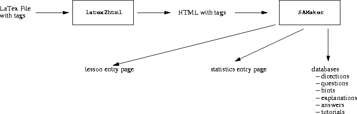
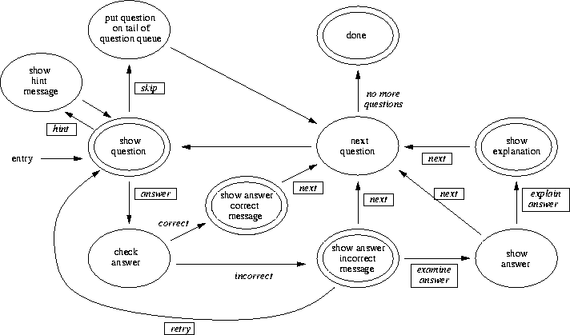

The implementation of SAMakerhas two main parts:
Figure  shows the process of using SAMakerto
put a lesson on the World-Wide Web.
SAMakeris a Perl program that reads a text file
and creates a lesson entry page,
an entry page to statistics on the lesson, and
several databases that contain all the information on the lesson.
Command line arguments to SAMakersupply the name of
the created pages and the directory in which the databases are
created and maintained.
The lesson author can delete the lesson by deleting the database
directory and the created pages.
Figure
shows the process of using SAMakerto
put a lesson on the World-Wide Web.
SAMakeris a Perl program that reads a text file
and creates a lesson entry page,
an entry page to statistics on the lesson, and
several databases that contain all the information on the lesson.
Command line arguments to SAMakersupply the name of
the created pages and the directory in which the databases are
created and maintained.
The lesson author can delete the lesson by deleting the database
directory and the created pages.
Figure  also shows that the input
to SAMakercan be the output
of an HTML conversion engine (in this case latex2html).
Conversion engines exist for many popular text formatting packages,
so lesson authors who do not know HTML can use a familiar editor
and text formatting package to develop a lesson.
also shows that the input
to SAMakercan be the output
of an HTML conversion engine (in this case latex2html).
Conversion engines exist for many popular text formatting packages,
so lesson authors who do not know HTML can use a familiar editor
and text formatting package to develop a lesson.

The input to SAMakeris a text file containing both HTML
and special, SAMakertags.
The HTML tags control the presentation of individual questions (e.g.,
to change the font of a word in a question) and pass through
SAMakerunchanged.
SAMakertags, on the other hand, are interpreted and removed
by SAMaker.
These tags are divided into two categories: header tags and
question tags.
Table  lists all the header tags that
SAMakerinterprets and
Table
lists all the header tags that
SAMakerinterprets and
Table  lists the question tags.
The header tags cover general aspects of the lesson, while the question
tags are pertinent only to individual questions or groups of questions.
The text associated with a tag immediately follows the tag.
For example, a multiple choice question is shown below, the correct
answer is indicated by the (r) tag.
lists the question tags.
The header tags cover general aspects of the lesson, while the question
tags are pertinent only to individual questions or groups of questions.
The text associated with a tag immediately follows the tag.
For example, a multiple choice question is shown below, the correct
answer is indicated by the (r) tag.
(MC) When a tuple is deleted,
(w) the key, if any, is replaced by NULL.
(w) the delete operation is not allowed
if the tuple's primary
key is a target of a foreign key.
(w) the tuple is deleted as well as the
tuples that have foreign keys
that have the deleted primary key as
their target.
(w) all of the above.
(r) none of the above.
All header tags must appear before any question tags in the input text file.
Often the same header (header tags and text) can be used for every
interactive lesson in a subject.
An interactive lesson is a sequence of forms processed by
two Common Gateway Interface (CGI) scripts, Starterand Marker.
All forms in a lesson are dynamically generated by Marker
from the database of lesson information created by SAMaker.
Each question in the lesson is a separate form, with additional forms
for marked questions, hints, and explanation of answers.
A student progresses through the lesson by choosing available buttons
on each form in the lesson.
Figure  shows the complete state-transition diagram
supported by Marker.
States in the diagram are ovals, with terminal states denoted by
concentric ovals
(a student can leave the lesson from a terminal state).
Transitions are represented by edges that connect states.
A boxed label for an edge represents a button that is activated.
For example, to move from the ``show answer incorrect message'' state to
the ``show question'' state, the user would select a ``retry'' button.
Each transition is recorded in the user's statistical profile
for later analysis.
shows the complete state-transition diagram
supported by Marker.
States in the diagram are ovals, with terminal states denoted by
concentric ovals
(a student can leave the lesson from a terminal state).
Transitions are represented by edges that connect states.
A boxed label for an edge represents a button that is activated.
For example, to move from the ``show answer incorrect message'' state to
the ``show question'' state, the user would select a ``retry'' button.
Each transition is recorded in the user's statistical profile
for later analysis.
Statistics on each user's performance in a lesson are preserved in separate statistical files. At any time, a user may obtain an aggregate view of this statistical information through forms processed by a CGI-bin script called Stats. Upon entry to the statistics forms, Statscollects all the statistical data on each question from each statistical file. Statsdynamically generates forms to show the percentage and number of times that a question was correctly answered and a breakdown on the variety of answers.
We found that we would always make one or more minor mistakes when we created a lesson, but unlike a paper lesson, a WWW lesson can be dynamically modified by executing SAMakeragain on the corrected source. SAMakerchanges only the lesson database, and leaves all extant statistical information unchanged. Since the question number is used as a key in the statistical files, the order of questions should not be changed, although new questions can be added to the end of an existing lesson.

$headerText. The default formats insert this text into the
start of the body of each page generated in the lesson.
The header can be used to give a lesson a consistent look-and-feel,
by setting a background colour or font, or
to establish a base directory
for images produced by latex2html.
$footerText.
Like the (HEADER) tag, this can be used to give a lesson a
consistent look-and-feel.
Question tags.